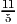
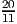
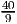
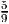
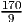
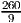
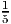

(a) Tableau B corresponds to an inequality constrained problem in the two variables x2 and s2, namely
Basic variables s1 = 4, x1 = 2, s3 = 1, s4 = 5.
View from Tableau B:

Can read off the values of x1, s3, s4 since the corresponding constraints have a coefficient of “1” for one of the nonbasic variables.
Value of x1: intersection of x1 = 0 constraint with the s2-axis.
Value of s3: intersection of s3 = 0 constraint with the x2-axis.
Value of s4: intersection of s4 = 0 constraint with the x2-axis.
Value of s1: need to scale the intercept in the s1 = 0 constraint by . Intercept is at , so scaling returns 4.
(b)
This is somewhat heuristic:
x1: can read this off, since this is one of the axes in View A.
s4: can red this off, since the line s4 = 0 is parallel to the x1-axis.
s3: could perhaps argue we moved perpendicular to the constraint s3 = 0 when we moved from A to B, so we could subtract the change in x1 from the old value for s3.
s1: doesn’t look easy to read this from the graph.
(a) Yes.
(b) P = Q3Q2Q1.
Pivot matrix is
so updated tableau is
Pivot matrix is
so updated tableau is
In optimal form, so optimal solution has basic variables x5 = , x2 = 115, x3 = , with value -.
It can be checked that this solution is feasible in the original tableau M0, and achieves the given objective function value.
(a) We have xB = B-1b - B-1Nx N, so
(b) The entries in the row vector cNT - c BT B-1N are the reduced costs, and all the variables in xN are 0 at the current BFS. So if we are not optimal then we can try to improve by bringing in a variable with a negative component in the vector cNT - c BT B-1N.
The change in the objective function value at each iteration is the product of the cost cj with the minimum ratio for the pivot column. If the linear program is nondegenerate then the value of the minimum ratio is always nonzero, so there is a strict improvement in the objective function value at every iteration. Thus, we can never return to an earlier tableau, so we cannot cycle.
(a) We can perturb the constraint x2 ≤ 5 to be x2 ≤ 4. Then the point E splits into two extreme points: (0, 4) and (, 4). The optimal solution remains D and is unchanged. Other perturbations could move D slightly, see the answer to the next part for an example.
(b) We could have perturbed the constraint x1 + x2 ≤ 6, for example to x1 + x2 ≤ 6.
Then D would have been perturbed to (3, ). The same constraints are active at the optimal
solution in the perturbed problem, so we could have recovered the original x* by solving the
unperturbed constraints: x1 = 3 together with x1 + x2 = 6.
). The same constraints are active at the optimal
solution in the perturbed problem, so we could have recovered the original x* by solving the
unperturbed constraints: x1 = 3 together with x1 + x2 = 6.